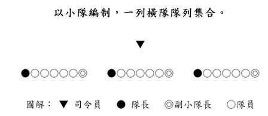
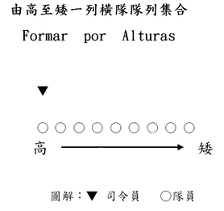
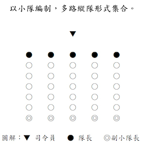
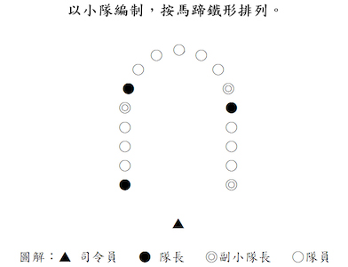
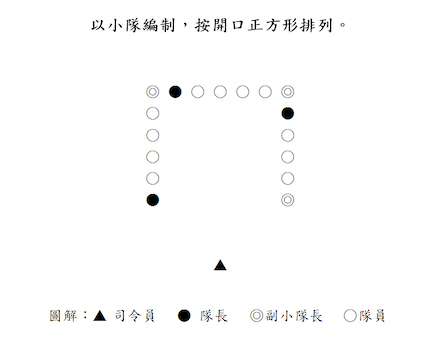
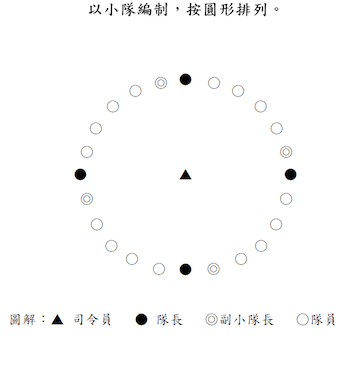
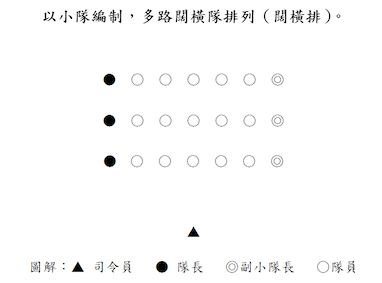
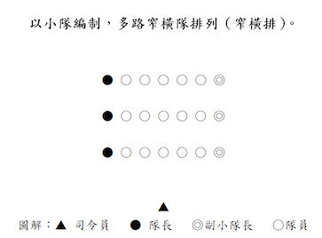

標準步操及禮儀
中國乃禮儀之邦，其文化源遠流長，更聞名於世。所以古語有云：“禮多人不怪＂就是這個道理。所以我們童軍亦有責任盡力去保持和發揚此一中華傳統美德。
由於行禮的表達方式十分繁多，至於哪種方式為宜，則視其個人之經驗。下面，我們將分別介紹有關澳門童軍總會頒佈的禮儀規定和日常生活基本禮儀，供各位學員參考。
“握手禮”
A. 澳門童軍現行使用的“左握禮”： 童軍專用的握手禮是以左手相握的，跟普通的握手禮不同，所以稱之為“左握禮”。凡童軍人士，都可以行此禮，乃表示彼此都是世界童軍一分子的一種表示。因為左手近心臟，所以又表示熱誠和友愛，實在是很有意義的。童軍行“握手禮”都用左手，進行握手禮時，將左手的手指伸直，拇指分開，其他四指合攏，然後和對方的左手相握，兩目要正視對方。
“注目禮”
行注目禮，等同以手作敬禮致敬。注目禮大致可分為“原地注目禮”和“行進間注目禮”。如果雙手都持著物件時，亦可行注目禮。“肅立禮”
“肅立禮”是指以立定不動的姿勢來表示致敬的意思，作法近乎於“立正”的要求。行禮前須原地立定，身正直，頭要正，兩目正視，手下垂，成半握拳狀輕貼腿側。行禮時，不可旁觀，也不可左右搖動。
在奏國歌、會歌、旅歌等時候，全體人員於行禮前一律原地立正，面向前方，兩目正視，行肅立禮直至演奏完畢為止。如奏樂 /歌期間配以升旗禮進行的話，則按“原地注目禮”處理禮進行。
“鞠躬禮”
“鞠躬禮”：有十五度鞠躬禮和三十度鞠躬禮之分。作“鞠躬禮”之前須立定，手下垂，成半握拳狀輕貼腿外側。行禮時，身體前傾，不可旁顧，也不可左右搖動。因為作法不易掌握，所以只要心意專注，度數多少不必在意，不過要特別注意一點 ─ 行禮時必須脫帽。
“頷首禮”
“頷首禮”即是點頭的意思。在我們的日常生活中，使用“頷首禮”的機會最多。選擇行一個斯文而又大方的“頷首禮”，不失是一種既方便又大方的敬禮方式。
行“頷首禮”時動作要注意斯文大方，恰到好處即可。通過點頭的動作，表達出我們的真誠。行禮時，切勿動作浮誇和輕佻。日常平輩、平職級相見面，都經常採用這種方式。行禮時，原地或行進間進行都可。
澳門童軍標準步操口令
澳門童軍標準步操口令
|
序 號 |
口 令 及 其 說 明 |
|
1 |
Escoteiros Forma － 全 體 童 軍 集 合 |
|
2 |
Grupos Forma － 全 旅 童 軍 集 合 |
|
3 |
Caminheiros Forma － 深 資 童 軍 團 集 合 |
|
4 |
Tribos Forma － 童 軍 團 集 合 |
|
5 |
Lobitos Forma － 幼 童 軍 團 集 合 |
|
6 |
Patrulha Forma － 小 隊 集 合 |
|
7 |
Atenҫão － 注 意 |
|
8 |
Iҫar à Bandeira － 升 旗 |
|
9 |
Arriar à Bandeira － 降 旗 |
|
10 |
Firme － 挺 胸 |
|
11 |
Sentido － 立 正 |
|
12 |
Descansar － 稍 息 |
|
13 |
À Vontade － 放 鬆 |
|
14 |
Primeira Forma - - - -回 復 至 此 口 令 前 的 步 操 動 作 |
|
15 |
Destroҫar － 解 散 |
|
16 |
Continência － 敬 禮 |
|
17 |
Esquerda Volver － 向 左 轉 |
|
18 |
Direita Volver － 向 右 轉 |
|
19 |
Meia Volta Volver － 向 後 轉 |
|
20 |
Pela direita perfilar － 向 右 看 齊 |
|
21 |
Com intervalos abertos pela direita perfilar - - - - 闊 橫 排 向 右 看 齊 |
|
22 |
Olhar frente － 向 前 看 |
|
um, dois, trés, quatro, cinco, seis, sete, oito, nove, dez. - - - - 一至十 |
|
|
23 |
- - passo(s) em frente marche - - - - 向 前 行 - - 步 |
|
24 |
- - passo(s) à retaguarda marche - - - - 向 後 行 - - 步 |
|
25 |
- - passo(s) lateral(is) à esquerda marche - - - - 向 左 橫 行 - - 步 |
|
26 |
- - passo(s) laterial(is) à direita marche - - - - 向 右 橫 行 - - 步 |
|
27 |
Lateral esquerdo marche － 向 左 方 橫 行 |
|
28 |
Lateral direito marche － 向 右 方 橫 行 |
|
29 |
Alto － 停 步 |
|
30 |
Abrir filerias marche - - - - 散 開 橫 列 排 （開 行） |
|
31 |
Unir Fileiras marche － 靠 攏 橫 列 排 （閂 行） |
|
32 |
Marcar passo － 原 地 踏 步 |
|
33 |
Em ordinário marche － 標 準 步 向 前 走 |
|
34 |
Em frente marche － 向 前 走 |
|
35 |
À esquerda rodar － 行 進 中 向 左 轉 彎 |
|
36 |
À direita rodar － 行 進 中 向 右 轉 彎 |
|
37 |
Olhar direita － 向 右 望 |
|
38 |
Olhar frente － 向 前 望 |
|
39 |
Ombro arma － 持 旗 |
|
40 |
Apresentar arma － 持 旗 敬 禮 |
|
41 |
Descansar arma － 持 旗 休 息 |
|
42 |
Numerar seguido comerҫar － 報 數 |
|
43 |
Por (três) numerar － 由 (1)至 （3） 報 數 |
|
44 |
Formar por alturas comeҫar - - - - 由 高 至 矮 排 列 |
|
45 |
Pelotão Forma － 儀 仗 隊 集 合 |
|
46 |
Dar - me licença － 報 告 |
|
47 |
Pronto － 到 |
|
48 |
Pela esquerda perfilar － 向 左 看 齊 |
|
49 |
Com intervalos normais pela esquerda perfilar - - - - 窄 橫 排 向 左 看 齊 |
|
50 |
Trocar passo － 換 步 |
|
51 |
Em acelerado marche － 快 步 向 前 走 |
|
52 |
Em marcha lenta marche － 慢 步 向 前 走 |
|
53 |
Em marcha à vontade marche － 自 由 步 向 前 走 |
|
54 |
Em continência à direita － 向 右 望 敬 禮 |
|
55 |
Em continéncia á esquerda － 向 左 望 敬 禮 |
|
56 |
Continência cessar － 敬 禮 完 畢 |
|
57 |
Passos corrida marche － 開 步 跑 |
|
58 |
Em terra lanҫar - arma － 將 棍 置 於 地 上 |
|
59 |
De terra levanter - arma － 將 棍 取 起 |
|
60 |
Oitavo esquerdo volver － 45 度 角 向 左 轉 |
|
61 |
Oitavo direito volver － 45 度 角 向 右 轉 |
|
62 |
Grupo ______ Olhar direita - - - - 第 __ 旅 成 員 向 右 看 敬 禮 |
|
63 |
Grupo ______ Olhar esquerda - - - - 第 __ 旅 成 員 向 左 看 敬 禮 |
|
64 |
Grupo ______ Olhar frente - - - - 第 __ 旅 成 員 向 前 看 |
|
65 |
Pode sentar － 全 體 坐 下 |
|
66 |
Levantar － 全 體 起 立 |
|
67 |
Alcateia － 幼 童 軍 團 呼 集 合 |
集隊之手號







